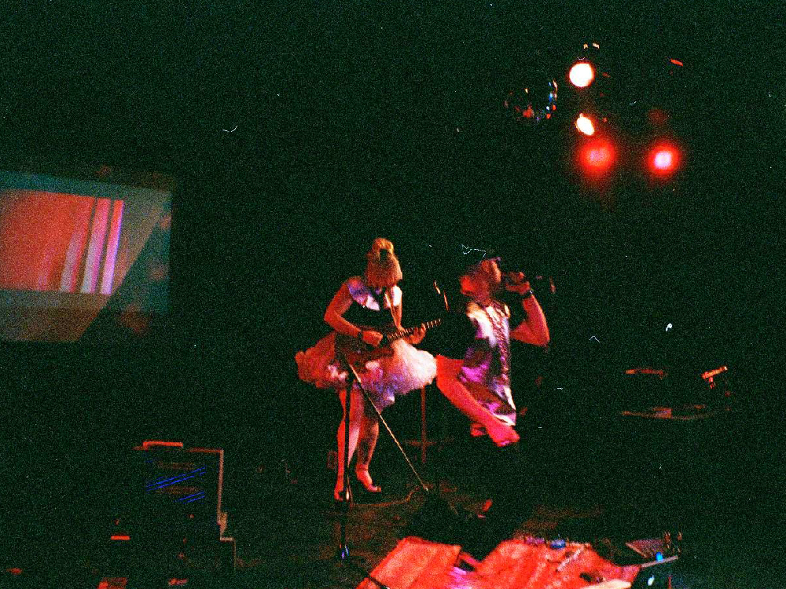
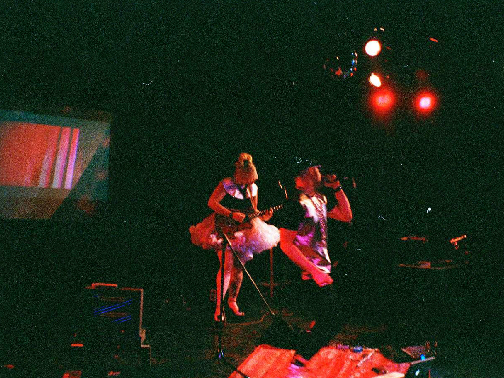

Founded in 2000, Art Matters is often labeled the largest student-run art festival in North America.
An annual Art Matters festival spans 3 weeks and features about 10 exhibitions curated by and for undergraduate students.
We love new ideas, and frequently collaborate with professional festivals and organizations to create mentorships and future exhibition opportunities.
Art Matters is a non-profit, honorarium-based initiative. Our goal is to get people working together, encouraging students from different artistic practices to exchange meaningful artistic endeavors.
 



|


|